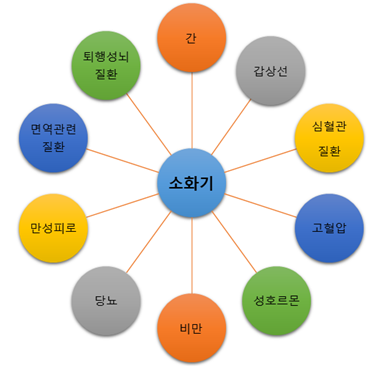

광안동의보감한의원
광안동의보감한의원소화기는 크게 식도, 위장, 소장, 대장으로 나뉘는데 제2의 뇌라고 불릴 정도로 소화기관은 자율신경의 지배를 받는 독립적인 기관입니다.
소화기는 인체의 대사에서 영양을 흡수하고 모든 장기에 영양분을 공급하는 중요한 역할을 하고 있다고 보아 한의학에서 중앙토(土)의 위치를 부여하였습니다. 소화기능의 이상은 다른 장기의 기능이상과 밀접한 관련이 있습니다. 따라서, 어떤 질병이던지 소화기의 문제가 있으면 그와 연관된 상태에서 치료를 하고자 하는 것이 저희 광안동의보감한의원의 소화기질환 치료 관점입니다.
또한, 각종 노폐물중 담음과 어혈이 소화기에 직접 쌓여서 병증을 일으키기도 하므로 소화기의 담적(痰積)을 제거하는 치료를 병행하기도 합니다.

광안동의보감한의원 소화기질환 치료
- 한약: 소화기증상과 개개인의 몸상태에따른 맞춤처방을 합니다
- 해독요법: 담적개선을 위한 해독치료입니다. 대변 소변을 원활하게하고 간과 장을 깨끗이합니다.
- 침: 한의학의 원리에따른 소화기개선을 위한 침치료입니다.
- 약침: 담적치료를 위한 약침, 위장관의 기능회복을 위한 약침을 치료를 합니다.
- 왕뜸: 복부 경혈에 왕뜸을 하면 비위장 경락을 따뜻하게 합니다. 특히 냉증이 있는 경우 도움이 많이 됩니다
식생활주의사항
(1) 권장하는 식사습관: 제시간에 제대로 먹기
- 식사는 5~6시간 간격을 두고 규칙적으로 하는 것이 좋다.
- 꼬로록하는 소리를 즐겨라. 특히 저녁에서 아침사이는 12시간이상 공복을 유지하는 것이 좋으며, 이때 노화방지 효소가 활동을 한다.
- 야식을 한 경우에는 아침을 쉬고 소화계에 휴식을 준다.
- 과일이나 효소가 풍부한 음식은 식전 20분전에 먹는 것이 좋다.
- 순서대로 먹자. 효소가 많은 음식(데친야채나 버섯류→ 식이섬유많은 야채나 과일)을 먼저 먹고, 효소가 적은 음식(고기→ 탄수화물)을 먹자.
- 단순하게 먹자. 잡곡밥은 5미 이내로 먹는 것이 좋다.
- 소화기가 약하다면 과일도 섞어 먹지 않도록 한다.
- 음식은 통째로 먹는 것이 좋다.(현미, 통밀가루등)
- 제철 채소, 과일등 자연식을 하자.
- 해조류, 콩류를 자주 먹자.
(2) 주의할 음식
- 밀가루음식: 혈당을 높임, 첨가물, 장점막을 예민하게 만듭니다. 세포의 당사슬을 불량하게 만들어 각종 알레르기, 면역약화 및 비만을 일으킵니다.
- 튀긴음식
- 우유: 단백질 소화효소 소모과다, 각종 알레르기의 원인
- 계란: 항생제, 성장촉진제등 다량. 자연 유정란은 괜찮다.
- 가공식품, 인스턴트식품(즉석식품, 냉동식품, 라면), 과자
- 찬음식류: 청량음료, 아이스크림
- 가공육류: 햄, 소시지. 튀기거나 구운 것은 더욱 좋지않다
- 술, 담배, 커피 등 기호식품
(3) 식습관교정
- 식사후 2~3시간이내에는 바로 눕지않는다
- 30~50번 씹어라 잘씹지 않으면 치매가능성도 높아진다.
- 식사중이나 식사직후 물을 많이 먹지 않는다
- 밥을 국이나 물에 말아먹지 않는다
- 찬음식을 먹지않는다 (맥주, 얼음물, 빙과류, 냉음료, 물냉면, 냉모밀등)
- 간식하지 않는다. 특히 속이 비었을때 사탕이나 청량음료를 많이 마시면 좋지 않다.
주요 소화기 질환
식도질환
1.역류성식도염: 식도괄약근의 약화로 위산이 역류하여 식도점막의 자극증상이 나타나는 증상과 이와 관련된 합병증을 이릅니다. 이는 대표적으로 스트레스와 잘못된 식습관, 생활습관 등이 원인이 됩니다.
- 인두부위 증상- 입냄새, 신물, 잦은 트림, 헛구역질, 목의 이물감, 인후두부의 불편감, 쉰목소리, 만성기침
- 흉부증상- 가슴이 답답하고 속이 타는 듯 쓰리다, 명치의 답답함
- 복부증상- 가스참, 소화불량, 복통
2.식도기능장애: 식도기능장애는 종양이나 식도염 같은 병이 없이 식도근육이나 신경기능에 이상이 생겨서 음식물이 잘 내려가지 못하는 질환을 말합니다.
역류성식도염과 마찬가지로 위식도기능의 정상화를 위한 치료를 진행하고 특히 분문과 유문의 경련을 없애고 연동운동이 잘 되게하는 한약치료를 합니다.
증상
- 가슴통증
- 목의이물감
- 음식물을 삼키기힘듬
- 구토
위장질환
1.만성소화불량
반복되는 소화불량으로 식사시마다 체하고 답답하고 복부팽만감 속이 더부룩함 가스찬느낌 가슴답답함 명치부위의 통증 대변이 고르지못하고 변비또는 설사증상이 나타납니다.
2. 기능성소화불량(신경성소화불량)
내시경상 기질적인 이상은 없지만 지속적인 또는 재방설인 소화불량, 복부불편감이 발생하는 경우를 말합니다. 스트레스만 받으면 소화가 안되고 속이 불편한 경우가 많습니다.
기능성 소화불량의 분류
- 위운동장애성- 조금만 먹어도 포만감을 느끼거나 속이 더부룩하고 갑갑하다
- 궤양유사증상성- 속이비면 쓰리고 아프다가 음식을 먹으면 가라앉는다
- 역류성식도염유사증상성- 가슴에 열감이 느껴지고 신물이 올라온다
이중에 위운동장애성이 가장 많이 발생합니다.
3. 위하수 위무력: 위근육이 약해져서 탄력을 잃은 상태로 위의 운동기능에 장애가 생겨서 기능성 소화장애, 만성 소화불량의 원인이 됩니다.
- 속이 늘 불편하다
- 입맛이 없다
- 트림
- 가스,
- 더부룩함
- 위장에서 소리가난다(복명)
- 구토
- 미식거림
- 두통
위하수: 선천적, 식습관(과식) 무리한 다이어트, 노화 등으로 인해 발생합니다
위무력증: 위의 운동기능이 떨어진 상태를 말하며 이는 위장으로 혈액공급이 잘 안되고 위장의 혈액순환에 문제가 생기게 됩니다. 이 때문에 적절한 소화액분비가 잘 안되 위산과다 또는 저산증 등으로 소화가 어렵게 됩니다. 특히, 식후 윗배가 많이 부풀어 있으며 답답함을 많이 느끼고, 트림을 자주 하며 자주 체합니다. 그외 체중감소, 변비 등의 증상을 호소합니다.
4. 담적(痰積): 위와 장에 쌓이는 노폐물로 인해 위장이 정상보다 부어있고 단단해진 상태를 말하는 것으로 명치와 배꼽주변이 딱딱하게 느껴지고 만지면 아프기도 합니다. 담적병은 위와 장의 운동능력이 떨어져서 소화가 잘 안되고 복통, 구역감, 가스 등이 생기는 소화기 증상이외에 얼굴, 근육부위증상, 전신적증상을 유발하기도 합니다.
- 소화기증상- 소화가 잘 안되고 복통, 구역감, 가스(방귀나 트림이 잦다). 속이 메스껍고 역류할때가 있다, 음식을 먹으면 자주 체한다, 대편이 편하지 않다
- 안면부위증상- 눈이 침침하거나 뻑뻑하다, 다크써클이 있다, 입주변에 트러불이 자주 생기고 입냄새가 많다, 기미가 낀다
- 근육부위증상- 뒷목, 어깨가 뻐근하다
- 전신증상- 불면, 가슴이 답답하고 이유없이 불안하다, 손발이 붓거나 저리다
대장질환
1. 과민성대장
과민성대장증후군은 극심한 복부불편감과 설사,변비등이 교대로 반복적으로 나타나는 질환입니다. 정신적스트레스가 많은 분들에게 자주 발생합니다. 만성적인 경우 대장의 무력증과 예민하게 되어 작은 변화에도 예민하게 반응하게되며 꾸준한 치료가 필요합니다.
증상
- 식후즉시 복통설사
- 설사와 변비의 반복
- 잔변감
- 스트레스시 복통
- 하루에 최소 2~5번이상 화장실에 간다
- 가스차고 속이 더부룩하다.
- 대변증상외에 두통, 미식거림, 가슴답답함, 소화불량, 가스차고 방귀가 자주나오는 등의 증상을 같이 동반하는 경우가 많습니다
2. 만성설사
대변의 횟수나 양이 증가하고 수분이 증가되어 묽은 변을 보는 것을 말하는데 만성설사의 원인은 비위장기능의 저하, 노화로인한 신장기능저하, 스트레스, 만성피로 등이 있습니다.
증상
- 묽은변을 하루에 3~4회이상 본다
- 식욕부진
- 소화불량
- 체중감소
- 수족냉증
- 만성피로
3. 만성변비
배변이 원활하게 나오지 않는 증상으로 식사의 불규칙 물섭취의 부족, 대변습관의 불규칙, 노화, 운동부족 등으로 많이 발생하며 특히 여성들의 경우 다이어트, 스트레스가 원인이 되거나 임신, 생리중의 변화로 변비가 생기는 경우도 있습니다. 소화기능이 약화되면서 장운동전체의 기능저하가 있는 경우는 위장기능을 함께 개선하는 것이 좋습니다.
증상
- 잔변감
- 주3회미만 대변
- 배변시 과도하게 힘을 줘야된다